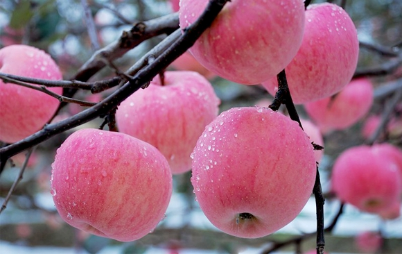

佛经《采兰杂志》云： "燕地有苹婆果，味极鲜，夜置枕边，极有香气，即佛书所谓苹婆，华言于思也"。“苹婆果”所言即是苹果。
陕西富县，因其独特的地貌、气候、土壤状况，是国内外专家公认的苹果最佳优生区之一，素有“中国苹果之乡”的美誉，其“富县”苹果也被评为陕西省知名品牌。
富县苹果素以色、香、味俱佳著称。它品质优良，果形优美，个大均匀，果面洁净，色泽艳丽，肉质脆密，含糖量高（高于外地苹果2%～3%），香甜可口，硬度适中，耐贮藏（在土窑洞中可存放至翌年4～5月）等优点而居全国同类苹果之冠，誉满四方，驰名中外。该县被列为全国苹果外销的重要生产基地之一，年销量数亿公斤。